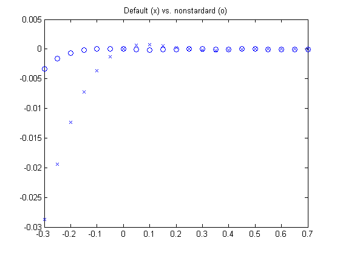

Cubic spline interpolation
Illustration of the use of CSAPI and CSAPE.
Copyright 1987-2003 C. de Boor and The MathWorks, Inc. $Revision: 1.18 $
Overview
The spline toolbox command
values = csapi(x,y,xx)
returns the values at XX of the cubic spline interpolant to the given data (X,Y), using the not-a-knot end condition. This interpolant is a piecewise cubic with break sequence X whose cubic pieces join together to form a function with two continuous derivatives. The "not-a-knot" end condition means that, at the first and last interior break, even the third derivative is continuous (up to roundoff).
Just two data points result in a straight line interpolant:
xx = linspace(0,6,121); x = [0 1]; y = [2 0]; plot(xx,csapi(x,y,xx),'k-',x,y,'ro'), grid off title('Interpolant to two points')
Three data points give a parabola:
x = [2 3 5]; y = [1 0 4]; plot(xx,csapi(x,y,xx),'k-',x,y,'ro'), grid off title('Interpolant to three points')
Four or more data points give in general a cubic spline.
x = [1 1.5 2 4.1 5]; y = [1 -1 1 -1 1]; plot(xx,csapi(x,y,xx),'k-',x,y,'ro'), grid off title('Cubic spline interpolant to five points')
These look like nice interpolants, but how do we check that CSAPI performs as advertised?
We already saw that we interpolate, for we always plotted the data points and the interpolant went right through those points.
But, to be sure that we get a cubic spline, it is best to start with data from a cubic spline of the expected sort and check whether CSAPI gives us back that cubic spline.
One such is the truncated third power, i.e., the function x |-> subplus(x - xi)^3 , with XI one of the breaks and SUBPLUS the t r u n c a t i o n f u n c t i o n, provided by the spline toolbox command SUBPLUS:
help subplus
SUBPLUS Positive part.
x , if x>=0
y = subplus(x) := (x)_{+} = ,
0 , if x<=0
returns the positive part of X. Used for computing truncated powers.
For the particular choice XI = 2 , we get the function plotted above. As expected, it is zero to the left of 2, and rises like (x-2)^3 to the right of 2.
plot(xx, subplus(xx-2).^3,'y','linewidth',3), grid off axis([0,6,-10,70])
The particular truncated power interpolated
Now we interpolate this particular cubic spline at the data sites 0:6, and plot the interpolant on top of the spline, in black.
x = 0:6; y = subplus(x-2).^3; values = csapi(x,y,xx); hold on, plot(xx,values,'k',x,y,'ro'), hold off title('Interpolant to subplus(x-2)^3')
When comparing two functions, it is usually much more informative to plot their difference. To put the size of their difference into context, we also compute the maximum data value. This shows the error to be no worse than the inevitable round-off.
plot(xx,values-subplus(xx-2).^3)
title('Error in cubic spline interpolation to subplus(x-2)^3')
max_y=max(abs(y))
max_y =
64
A truncated power that cannot be reproduced
As a further test, we interpolate a truncated power whose CSAPI interpolant at the sites 0:6 cannot coincide with it. For example, the first interior break of the interpolating spline is not really a knot since the interpolant has three continuous derivatives there. Hence we should not be able to reproduce the truncated power centered at that site. We try
values = csapi(x,subplus(x-1).^3,xx); plot(xx,values-subplus(xx-1).^3) title('Error in not-a-knot interpolant to subplus(x-1)^3') xlabel(['since 1 is a first interior knot, it is not active for this',... ' interpolant'])
The difference is as large as .18, but decays rapidly as we move away from 1. This illustrates that cubic spline interpolation is essentially local.
It is possible to retain the interpolating cubic spline in a form suitable for subsequent evaluation, or for calculating its derivatives, or for other manipulations.
This is done by calling CSAPI in the form
pp = csapi(x,y)
which returns, in PP, the ppform of the interpolant. This form can be evaluated at some points XX by
values = fnval(pp,xx)
It can be differentiated by
dpp = fnder(pp)
or integrated by
ipp = fnint(pp)
which return, in DPP or IPP, the ppform of the derivative or the primitive, respectively.
Differentiating the interpolant
For example, we plot the derivative of this truncated power, i.e., x |-> 3*subplus(x-2)^2 (again in yellow) and, on top of it, the derivative of our interpolant (again in black).
pp = csapi(x,subplus(x-2).^3); dpp = fnder(pp); plot(xx,fnval(dpp,xx),'y','linewidth',3), hold on plot(xx,3*subplus(xx-2).^2,'k'), hold off, grid off title('Derivative of interpolant to subplus(x-2)^3')
Again, the more informative comparison is to plot their difference, and this is again no bigger than round-off.
plot(xx,fnval(dpp,xx)-3*subplus(xx-2).^2)
title('(derivative of interpolant to subplus(x-2)^3 ) - 3*subplus(x-2)^2')The second derivative of the interpolant should be 6*subplus(.-2). We try it, plotting above the difference between this function and the second derivative of the interpolant to subplus(.-2)^3. Now there are jumps, but they are still within roundoff.
ddpp = fnder(dpp); plot(xx,fnval(ddpp,xx)-6*subplus(xx-2))
title('(second derivative of interpolant to subplus(x-2)^3 ) - 6*subplus(x-2)')The integral of subplus(.-2)^3 is subplus(.-2)^4/4. We plot the difference between it and the integral of the interpolant to subplus(.-2)^3:
ipp = fnint(pp);
plot(xx,fnval(ipp,xx)-subplus(xx-2).^4/4)
title('(integral of interpolant to subplus(x-2)^3 ) - subplus(x-2)^4/4')The command CSAPE also provides a cubic spline interpolant to given data, but permits various other end conditions. It does not directly return values of that interpolant, but only its ppform. Its simplest version,
pp = csape(x,y)
uses the Lagrange end conditions, which are better at times than the not-a-knot condition used by CSAPI.
For example, consider again interpolation to the truncated power which CSAPI fails to reproduce. We plot here (in black), the error of the not-a-knot interpolant, along with the error (in red) of the interpolant obtained from CSAPE; -- not much difference between the two in this case.
exact = subplus(xx-1).^3; plot(xx, fnval( csapi(x,subplus(x-1).^3), xx ) - exact,'k'), hold on plot(xx, fnval( csape(x,subplus(x-1).^3), xx ) - exact,'r') title('Error in not-a-knot (black) vs. Lagrange (red)') hold off
Other end conditions: the `natural' spline interpolant
The command CSAPE only provides the interpolating cubic spline in ppform, but for several different end conditions. For example, the call
pp = csape(x,y,'variational')
uses the so-called `natural' end conditions. This means that the second derivative is zero at the two extreme breaks.
The `natural' spline interpolant: an example
We apply `natural' cubic spline interpolation to the truncated power we were able to reproduce, and plot the error. We now get a large error near the right end, due to the fact that we insisted on a zero second derivative there. For variety, we get the `natural' spline interpolant here by the command csape(x,y,'second') which uses the default value 0 for the second derivative at the extreme data sites.
pp = csape(x,subplus(x-2).^3,'second'); plot(xx, fnval(pp,xx) - subplus(xx-2).^3 ) title('Error in ''natural'' spline interpolation to subplus(x-2)^3') xlabel(' note the large error near the right end')
Other end conditions: prescribing second derivatives
When we use explicitly the correct second derivatives, we get a small error, as the above plot shows. The command CSAPE(X,[VALS(1),Y VALS(2)],'second') specifies that second derivatives are to be matched, with VALS(1) the second derivative at the left endpoint, and VALS(2) the second derivative at the right. We compute these values directly from the second derivative of the truncated power subplus(.-2)^3.
pp = csape(x,[6*subplus(x(1)-2),subplus(x-2).^3,6*subplus(x(end)-2)], 'second'); plot(xx, fnval( pp, xx ) - subplus(xx-2).^3,'r') title('Error in spline interpolation to subplus(x-1)^3 when matching f'''' at ends ')
Other end conditions: prescribing slopes
CSAPE also permits specification of endpoint s l o p e s . This is the c l a m p e d spline (or, c o m p l e t e cubic spline interpolant). The statement
pp = csape(x,[sl,y,sr],'clamped')
supplies the cubic spline interpolant to the data X, Y that also has slope SL at the leftmost data site and slope SR at the rightmost data site.
Other end conditions: mixed end conditions
It is even possible to mix these conditions. For example, our much exercised truncated power function f(x) = subplus(x-1)^3 has slope 0 at x = 0 and second derivative 30 at x = 6 (our last data site).
We therefore expect no error in the following interpolant:
pp = csape(x, [0,subplus(x-1).^3,30], [1 2] ); plot(xx, fnval(pp,xx) - subplus(xx-1).^3 ) title('Error in spline interpolation to subplus(x-1)^3 when matching ...') xlabel(' ... slope at left end and curvature at right.')
Other end conditions: periodic conditions
It is also possible to prescribe p e r i o d i c end conditions. For example, the sine function is 2*pi periodic and has the values [0 -1 0 1 0] at the sites (pi/2)*(-2:2) . The difference, plotted above, between the sine function and its periodic cubic spline interpolant at these sites, is only 2 percent. Not bad.
x = (pi/2)*(-2:2); y = [0 -1 0 1 0]; pp = csape(x,y, 'periodic' ); xx = linspace(-pi,pi,201); plot(xx, sin(xx) - fnval(pp,xx), 'x') title('Error in periodic cubic spline interpolation to sin(x)')
End conditions not explicitly covered by CSAPI or CSAPE
Any end condition not covered explicitly by CSAPI or CSAPE can be handled by constructing the interpolant with the CSAPE default side conditions, and then adding to it an appropriate scalar multiple of an interpolant to zero values and some side conditions. If there are two `nonstandard' side conditions to be satisfied, one may have to solve a 2x2 linear system first.
For example, suppose that you want to enforce the condition
lambda(s) := a (Ds)(e) + b (D^2 s)(e) = c
on the cubic spline interpolant s to the following data (taken from a a quartic polynomial that happens to satisfy this specific side condition):
q = inline('x.*(-1 + x.*(-1+x.*x/5))');
x = 0:.25:3; y = q(x);
e = x(1); a = 2; b = -3; c = 4;Then, in addition to the interpolant PP1 with the default end conditions ... pp1 = csape(x,y); ... and first derivative DP1 of its first polynomial piece ... dp1 = fnder( fnbrk(pp1,1) ); ... we also construct the cubic spline interpolant PP0 to zero data, and with a slope of 1 at E, as well as the first derivative DP0 of its first polynomial piece.
pp1 = csape(x,y); dp1 = fnder(fnbrk(pp1,1)); pp0 = csape(x,[1,zeros(size(y)),0], [1,0] ); dp0 = fnder( fnbrk(pp0,1) );
Then we compute lambda(s) for both s = PP1 and s = PP0 ...
lam1 := a*fnval(dp1,e) + b*fnval(fnder(dp1),e); lam0 := a*fnval(dp0,e) + b*fnval(fnder(dp0),e);
... and construct the right linear combination of PP1 and PP0 to get a cubic spline
pp := pp1 + ( (c - lambda(pp1))/lambda(pp0) )* pp0
that does satisfy the desired condition (as well as the default end condition at the right endpoint). We form this linear combination with the help of FNCMB.
lam1 = a*fnval(dp1,e) + b*fnval(fnder(dp1),e); lam0 = a*fnval(dp0,e) + b*fnval(fnder(dp0),e); pp = fncmb(pp0,(c-lam1)/lam0,pp1);
The plot shows that PP fits our quartic polynomial slightly better near E than does the interpolant PP1 with the default conditions ...
xx = (-.3):.05:.7; yy = q(xx); plot(xx, fnval(pp1,xx) - yy, 'x') hold on plot(xx, fnval(pp,xx) - yy, 'o') title('Default (x) vs. nonstardard (o)') hold off
If we also want to enforce the condition
mu(s) := (D^3 s)(3) = 14.6
(which our quartic also satisfies), then we construct an additional cubic spline interpolating to zero values, and with zero first derivative at the left endpoint, hence certain to be independent from PP0, as
pp2 = csape(x,[0,zeros(size(y)),1],[0,1]);
and solve the linear system for the coefficients D0 and D1 in the linear combination pp := pp1 + d0 * pp0 + d2 * pp2 for which lambda(pp) = c, mu(pp) = 14.6 . (Note that both PP0 and PP2 vanish at all interpolation sites, hence PP will match the given data for any choice of D0 and D2 ).
pp2 = csape(x,[0,zeros(size(y)),1],[0,1]);
For amusement, we use the MATLAB encoding facility to write a loop for computing lambda(PPj), and mu(PPj), for j=0:2
dd = zeros(2,3); for j=0:2 J = num2str(j); eval(['dpp',J,'=fnder(pp',J,');']); eval(['ddpp',J,'=fnder(dpp',J,');']); eval(['dd(1,1+',J,')=a*fnval(dpp',J,',e)+b*fnval(ddpp',J,',e);']); eval(['dd(2,1+',J,')=fnval(fnder(ddpp',J,'),3);']); end d = dd(:,[1,3])\([c;14.6]-dd(:,2)); pp = fncmb(fncmb(pp0,d(1),pp2,d(2)),pp1); xxx = 0:.05:3; yyy = q(xxx); plot(xxx, yyy - fnval(pp,xxx),'x') title('Error in spline interpolant to y = x.*(-1 + x.*(-1+x.*x/5))')
For reassurance, we compare this error with the one obtained in complete cubic spline interpolation to this function:
hold on plot(xxx, yyy - fnval(csape(x,[-1,y,-7+(4/5)*27],'clamped'),xxx),'o') title('Nonstandard (x) vs endslopes (o)') hold off
The errors differ (and not by much) only near the end points, testifying to the fact that both PP0 and PP2 are sizable only near their respective end points.
% As a final check, here is the third derivative of PP at 3 (which % should be 14.6 ): fnval(fnder(pp,3),3)
ans = 14.6000